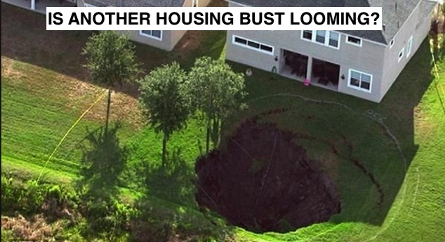

Is Another Housing Busting Looming?


CHANGE THIS INFORMATION!!!!!!!!!!!!!!!!!!!!!!!!!!!!!!!!!!!!!! The 2008 Housing Market Crash. People who were caught in the 2008 crash are spooked that a 2018 bubble will lead to another crash. ... As many unqualified buyers entered the market, demand soared. Many people bought homes as investments to sell as prices kept rising. DeFranco says that although the national average home price is likely to increase, regional home price changes will vary widely based on local supply and demand conditions. Retirement areas near water and metro areas popular with professionals and foreign buyers are likely to do well. At the same time, some limited and short-lived price declines may occur as housing markets rebalance and adapt to higher interest rates. Most at risk of price declines are metro areas with the hottest markets in recent years, and regions that already have relatively weak housing markets.